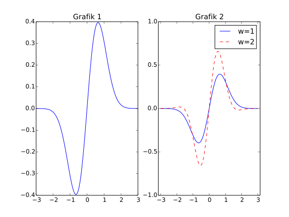
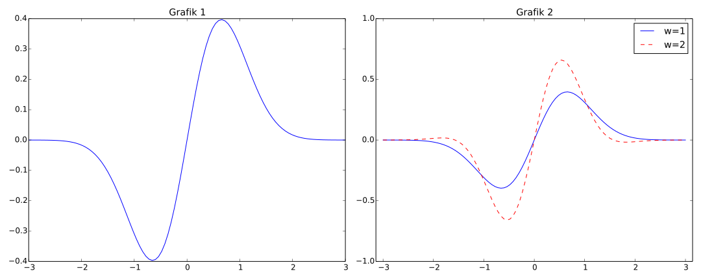
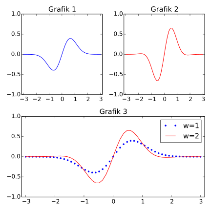

4.2. Grafik Çizimi
Kayıt Tarihi:
Son Güncelleme:
Bu derste iki boyutlu grafikleri çizmeyi öğreneceğiz, bu yöntemleri genelde bir $y=f(x)$ fonksiyonunun grafiğini çizdirmek için kullansak da bunların dışında istatiksel grafikler için de kullanılır.
Anahtar Kelimeler: animasyon · convert · figaspect · figsize · figure · grafik · grafik çizme · Imagemagick · matplotlib · plot · pyplot · subplotTemel Grafik Çizme Yöntemi
Python'da grafik çizmenin son derece basit bir mantığı vardır. Biz $x_0, x_1,\ldots,x_{n-1}$ ve $y_0, y_1, \ldots, y_{n-1}$ sayılarından oluşan verileri hazırlarız ve ilgili modüller $(x_0, y_0), (x_1, y_1),\ldots,(x_{n-1}, y_{n-1})$ noktalarını düz doğrularla birleştirirerek bir grafik oluşturur. Eğer nokta sayısını yeterince büyük seçersek köşeleri farketmeyiz ve bir eğrinin grafiğini böylece elde etmiş oluruz.
Python'da fonksiyonların grafiklerini çizmek için en yaygın olarak kullanılan paket Matplotlib'dir ve buna import matplotlib.pyplot biçiminde ulaşırız, bu paketi plt ön eki ile kullanmak standart bir uygulamadır. Bu paketin temel kullanımını bir örnek üzerinde açıklayalım.
import matplotlib.pyplot as plt
x = [-1.0, -0.5, 0.0 , 0.5, 1.0]
y = [1.0, 0.25, 0.0, 0.25, 1.0]
plt.plot(x, y)
plt.show()
Burada önce Matplotlib paketine erişiyoruz, daha sonra da x ve y list nesneleriyle çizilecek grafiğin noktalarının koordinatlarını tanımlıyoruz. Amacımız $(-1, 1)$, $(-0.5, 0.25)$, $(0, 0)$, $(0.5, 0.25)$ ve $(1, 1)$ noktalarını birleştirerek bir grafik elde etmektir. Bunu yapmak için Matplotlib paketinde bulunan plot() fonksiyonunu kullanırız, plot(x, y) komutu koordinatları x ve y ile verilen noktaları birleştiren bir grafik oluşturur. Bu grafiği ekranda görüntülemek için se show() fonksiyonunu çağırmamız gerekir. Bu kodları çalıştırdığımızda ekranda yeni bir pencerede istenen grafik görüntülenecektir, Aşağıda verilen ilk grafiği inceleyin.
Bir fonksiyonun grafiğini çizmek için noktaları böyle elle girmeyiz, aşağıdaki gibi listeler kolayca oluşturulabilir. Bunların oluşturduğu $f(x):=x^2$ grafiği yukarıda verilen ikinci grafiktir.
import matplotlib.pyplot as plt
x = [-1 + i*0.2 for i in range(11)]
y = [a**2 for a in x]
plt.plot(x, y)
plt.savefig('grafik.png')
plt.show()
Burada kullandığımız savefig() fonksiyonu belirtilen dosya yolu ve ismiyle grafiği sabit diskimize kayıt etmemizi sağlar.
Görüldüğü gibi on tane nokta ile bile köşeler belli oluyor, genelde çok daha fazla nokta kullanarak grafik çizeriz, bunların programımızın verimliliğini düşürmemesi için list nesneleri yerine NumPy array nesneleriyle çalışırız. Bunun için de grafiğini çizeceğimiz fonksiyonu vektörize etmemiz gerekir. Daha önce öğrendiğimiz gibi vektörizasyon oldukça basittir, çoğu durumda hiç bir şey yapmaya gerek bile yoktur. Örnek olarak $[-\pi, \pi]$ aralığında $f(x):=\text{e}^{-x^2}\sin(x)$ fonksiyonunun grafiğini çizdirelim. Bu fonksiyonu vektörize edebilmek için exp ve sin fonksiyonlarını math yerine numpy paketinden sağlamalıyız.
import numpy as np
import matplotlib.pyplot as plt
f = lambda x: np.exp(-x**2)*np.sin(x)
x = np.linspace(-3, 3, 101)
plt.plot(x, f(x))
plt.show()
Bu program yukarıdaki şekilde ilk sırada verilen grafiği üretecektir. Şimdi bu grafiği biraz zenginleştirelim. Grafiğe bir başlık eklemek için title() fonksiyonunu, yatay ve dikey eksenlere etiket yazmak için xlabel() ve ylabel() fonksiyonlarını, eksenlerin başlangıç ve bitiş noktalarını belirtmek için de axis() fonksiyonunu kullanırız. Aşağıdaki programda bu komutların kullanımına örnek veriyoruz, ayrıca bu kodlarda plot() komutunda üçüncü bir agüman olarak 'r-' girdiğimize dikkat edin. Bu üçüncü argüman grafiğin çizgi formatını belirtir ve iki veya üç karakterlik bir string verisi olarak verilir. Bunlardan ilki renk belirtir ve r,g,b,c,m,y,k,w karakterlerinden birisi olmalıdır, bunlar red, green, blue, cyan, magenta, black, white kelimelerini temsil eder. Daha sonra gelen karakter işaretleyici belirtir (marker), en sık kullanılanları o, s, p, D seçenekleridir ve bunlar daire, kare (square), beşgen (pentagon) ve elmas (diamond)'dır. Son olarak üçücü karakter ile çizgi stilini belirtiriz, seçenkler -, --, -., : biçimindedir. Bunlar sırasıyla tam çizgi, kesikli çizgi, keskli-noktalı çizgi ve noktalı çizgi anlamındadır. Örnek verecek olursak 'bs-.' olarak girilirse grafikte noktalar kare işaretleriyle işaretlenir, arasını dolduran çizgiler kesikli-noktalı olur ve renk kırmızı olur. İhtiyaca göre işaretleyici yada çizgi stili girmeyebiliriz, mesela sadece noktaları mavi renkte göstermek istersek 'bo' girebiliriz, ya da sadece kırmızı bir eğri göstermek istersek 'r-' girebiliriz.
import numpy as np
import matplotlib.pyplot as plt
f = lambda x: np.exp(-x**2)*np.sin(x)
x = np.linspace(-np.pi, np.pi, 101)
plt.plot(x, f(x), 'r-') #plt.plot(x, f(x), c='red', ls='-')
plt.title('Bir Grafik')
plt.xlabel('x')
plt.ylabel('y=f(x)')
plt.axis([-np.pi, np.pi, -1, 1]) #[xmin, xmax, ymin, ymax]
plt.show()
Yukarıda belirttiğimiz renk seçenekleri dışında herhangi başka bir renk belirtmek için color ya da sadece c parametresine değerler verebiliriz, c='red' gibi bir renk ismi belirtebiliriz. Veya alternatif olarak kendi rengimizin RGB kodlarını [0,1] aralığında olmak şartıyla yazabiliriz, c=[0.1, 0.5, 0.5] gibi. Pythonda kullanılabilen renk isimleri aşağıdaki şekil ile görülebilir. Renk dışında çizgi stili de bir argüman olarak girilebilir, linestyle='--' veya kısaca ls='--' gibi. Aynı şekilde işaretleyici simge de marker='o' biçiminde girilebilir, bunların dışında sık kullanılan bir da linewidth veya kısaca lw argümanı vardır, bununla çizgi kalınlığını float olarak belirtebiliriz. Bunların dışında grafiği özelleştirmek için bir çok argüman seçeneği vardır, Matplotlib internet sitesinden detaylı bilgi sağlanabilir.
Bir grafikte birden fazla eğri çizmek için her biri için ayrı bir plot() fonksiyonu çağırabiliriz, aşağıdaki örnekte göreceğimiz gibi bunun yerine tek bir fonksiyon içinde de grafikleri çizdirebiliriz. Birden fazla eğri içeren grafiklere çizgi stillerine göre bir açıklama eklemek için legend() fonksiyonunu kullanabiliriz, bu fonksiyona string verilerinden oluşan bir list nesnesi verirsek bu stringler açıklayıcı metin olarak grafiğe yapıştırılır. Aşağıdaki programda bunların kullanımını örnekliyoruz, bu program sıradaki şekil ile verilen grafiği üretecektir.
import numpy as np
import matplotlib.pyplot as plt
f = lambda x: np.exp(-x**2)*np.sin(x)
g = lambda x: np.exp(-x**2)*np.sin(2*x)
h = lambda x: np.exp(-x**2)*np.sin(3*x/2)
x = np.linspace(-3, 3, 101)
plt.plot(x, f(x), 'r-')
plt.plot(x, g(x), 'g--')
plt.plot(x, h(x), 'b-.')
#ya da
#plt.plot(x, f(x), 'r-', x, g(x), 'g--', x, h(x), 'b-.')
plt.legend(['w=1','w=2', 'w=3/2'])
plt.title('Bir Grafik')
plt.xlabel('x')
plt.ylabel('y=f(x)')
plt.axis([-np.pi, np.pi, -1, 1])
plt.show()
İleri Seviye Grafik Çizimi
Şimdi farklı grafikleri kullanarak yeni çizimler yapacağız. Örneğin birden fazla grafiği aynı şekil içinde fakat farklı eksenlerde gösterebiliriz, bunun için Matplotlib garfik yapısını biraz daha iyi anlamamız gerekir. Matplotlib ile bir grafik çizerken bir figure nesnesi oluşturulur ve plot() fonksiyonu ile çizilen grafikler birer plot nesnesi olarak bu figure nesnesi içine yerleştirilir, eğer yeni bir figure nesnesi oluşturmazsak tüm plot nesneleri aynı figure nesnesi içinde kalır. Ayrıca bir figure nesnesi içinde birden fazla plot nesnesi oluşturabiliriz, bunun için subplot() fonksiyonundan faydalanırız. Örnek olarak bir figure içinde yan yana iki grafik göstermek için bir figure nesnesi oluşturup daha sonra subplot() fonksiyonuyla iki tane plot nesnesi oluştururuz. Subplot nesnesi oluştururken subplot(1, 2, 1) ve subplot(1, 2, 2) komutlarını girmeliyiz. Buradak verdiğimiz argümanlar oluşturulan figure nesnesi içinde plotların nasıl yerleşeceğini belirtir. subplot(1, 2, 1) komutu ile bu grafiğin figure içinde $1\times2$ bölme oluşturulup ilk bölmeye yerleşeceğini belirtiyoruz, daha sonraki komut ile aynı şekilde bölme oluşturup ikinci bölmeye grafik yerleştiriyoruz. Bir örnek üzerinde gözlemleyelim.
import numpy as np
import matplotlib.pyplot as plt
f = lambda x: np.exp(-x**2)*np.sin(x)
g = lambda x: np.exp(-x**2)*np.sin(2*x)
x = np.linspace(-3, 3, 101)
plt.figure() #figure nesnesi olustur
plt.subplot(1, 2, 1) #subplot 1
plt.plot(x, f(x))
plt.title('Grafik 1')
plt.subplot(1, 2, 2) #subplot 2
plt.plot(x, f(x), 'b-', x, g(x), 'r--')
plt.legend(['w=1','w=2'])
plt.title('Grafik 2')
plt.axis([-np.pi, np.pi, -1, 1])
plt.show()
Bu program aşağıda gösterilen grafiği üretecektir.

Bu grafikte bazı iyileştirmeler yapmamız gerekiyor. Öncelikle grafikler aynı figure nesnesi içine sığması için yanlardan biraz bastırılmış gibi duruyor, ayrıca eksenler üzerindeki sayılar birbirine geçmiş. Grafiğin boyutunu ayarlamak için figure() fonksiyonuna bazı argümanlar verebiliriz. Örneğin figure(figsize=(8, 3)) biçiminde girersek grafiğin boyutu $8\times 3$ (inç cinsinden) biçiminde olacaktır ve bu yan yana iki grafik için uygun olur. Bunun yerine figure(figsize=plt.figaspect(0.4)) biçiminde girebiliriz, buradaki figaspect(0.4) ifadesi en-boy oranı 0.4 olacak anlamındadır. Diğer taraftan eksen üzerindeki sayıların birbirine girmemesini garanti etmek için tight_layout() komutunu kullanırız.
import numpy as np
import matplotlib.pyplot as plt
f = lambda x: np.exp(-x**2)*np.sin(x)
g = lambda x: np.exp(-x**2)*np.sin(2*x)
x = np.linspace(-3, 3, 101)
plt.figure(figsize=plt.figaspect(0.4)) #en-boy oran: 0.4
plt.subplot(1, 2, 1)
plt.plot(x, f(x))
plt.title('Grafik 1')
plt.subplot(1, 2, 2)
plt.plot(x, f(x), 'b-', x, g(x), 'r--')
plt.legend(['w=1','w=2'])
plt.title('Grafik 2')
plt.axis([-np.pi, np.pi, -1, 1])
plt.tight_layout() #yerlesimi iyilestir
plt.show()
Bu program da aşağıda verilen grafiği üretir.

Grafik yerleşimi konusunda subplot() fonksiyonunun kullanımını daha iyi kavramanız için farklı bir örnek daha yapalım.
import numpy as np
import matplotlib.pyplot as plt
f = lambda x: np.exp(-x**2)*np.sin(x)
g = lambda x: np.exp(-x**2)*np.sin(2*x)
x = np.linspace(-3, 3, 51)
plt.figure(figsize=plt.figaspect(1)) #en-boy oran: 1
plt.subplot(2, 2, 1)
plt.plot(x, f(x), 'b-')
plt.axis([-np.pi, np.pi, -1, 1])
plt.title('Grafik 1')
plt.subplot(2, 2, 2)
plt.plot(x, g(x), 'r-')
plt.axis([-np.pi, np.pi, -1, 1])
plt.title('Grafik 2')
plt.subplot(2, 1, 2)
plt.plot(x, f(x), 'b.', x, g(x), 'r-')
plt.legend(['w=1','w=2'])
plt.title('Grafik 3')
plt.axis([-np.pi, np.pi, -1, 1])
plt.tight_layout()
plt.show()
Bu program aşağıdaki grafiği üretir.
Benzer şekilde aşağıdaki program da sonrasında belirtilen grafiği üretecektir.
import numpy as np
import matplotlib.pyplot as plt
f = lambda x: np.exp(-x**2)*np.sin(x)
g = lambda x: np.exp(-x**2)*np.sin(2*x)
x = np.linspace(-3, 3, 51)
plt.figure(figsize=plt.figaspect(1)) #en-boy oran: 1
plt.subplot(2, 2, 1)
plt.plot(x, f(x), 'b-')
plt.axis([-np.pi, np.pi, -1, 1])
plt.title('Grafik 1')
plt.subplot(2, 2, 3)
plt.plot(x, g(x), 'r-')
plt.axis([-np.pi, np.pi, -1, 1])
plt.title('Grafik 2')
plt.subplot(1, 2, 2)
plt.plot(x, f(x), 'b.', x, g(x), 'r-')
plt.legend(['w=1','w=2'])
plt.title('Grafik 3')
plt.axis([-np.pi, np.pi, -1, 1])
plt.tight_layout()
plt.show()
Başka bir örnek olarak aşağıdaki programı inceleyin, üreteceği grafik hemen sonrasında veriliyor.
import numpy as np
import matplotlib.pyplot as plt
f = lambda x: np.exp(-x**2)*np.sin(x)
g = lambda x: np.exp(-x**2)*np.sin(2*x)
h = lambda x: np.exp(-x**2)*np.sin(3.0/2*x)
x = np.linspace(-3, 3, 51)
plt.figure(figsize=plt.figaspect(.7))
plt.subplot(2, 3, 1)
plt.plot(x, f(x), 'b-')
plt.axis([-np.pi, np.pi, -1, 1])
plt.title('Grafik 1')
plt.subplot(2, 3, 2)
plt.plot(x, g(x), 'r-')
plt.axis([-np.pi, np.pi, -1, 1])
plt.title('Grafik 2')
plt.subplot(2, 3, 3)
plt.plot(x, h(x), 'g-')
plt.axis([-np.pi, np.pi, -1, 1])
plt.title('Grafik 3')
plt.subplot(2, 1, 2)
plt.plot(x, f(x), 'b.', x, h(x), 'g--', x, g(x), 'r-')
plt.legend(['w=1', 'w=1.5','w=2'])
plt.title('Grafik 4')
plt.axis([-np.pi, np.pi, -1, 1])
plt.tight_layout()
plt.show()
Animasyon Yapmak
Python'da bir dizi grafik birleştirilerek animasyonlar hazırlanabilir. Bunun birden fazla yolu vardır ve hepsinin mantığı animasyonun her bir karesini ayrı ayrı kaydedip bunları bazı araçlar kullanarak birleştirmeye dayanır. Bu işlemi yapmak için bazı paketler mevcuttur, hatta Matplotlib içinde de bunları yapmak için özel fonksiyonlar vardır. Biz burada görece pratik olan bir yöntem kullanacağız. Bunun için önce bir döngü kullanarak her bir kareyi Matplotlib ile çizip diskimize kaydedeceğiz, daha sonra harici bir yazılım kullanarak bunları birleştirip animasyonu oluşturacağız. Bu birleştirme işini yapan faklı yazılımlar var, biz ImageMagick yazılımından faydalanacağız. Onun için önce ImageMagick web sayfasından bu yazılımı bilgisayarınıza kurmanız gerekiyor, işletim sisteminize ve donanımınıza göre bu işlemin nasıl yapılacağı detaylı bir şekilde açıklanmıştır. Bu işlemi tamamladıktan sonra işletim sistemi komut istemcisinde convert komutu kullanılabilir olmalıdır.
Bu işlemleri bir örnek üzerinde açıklayacağız. Örnek olarak daha önce $$ f(t)= \left\{ \begin{array}{ll} 1, & \quad 0 < t < T/2\\ 0, & \quad t = T/2\\ -1, & \quad T/2 < t < T \end{array} \right. $$ fonksiyonuna yaklaşımda bulunmak için kullandığımız $$ S(t;n) = \frac{4}{\pi}\sum_{i=1}^n\frac{1}{2i-1}\sin\left( \frac{2(2i-1)\pi t}{T} \right) $$ Fourier serisini ele alalım. Farklı $n$ değerleri için $[0, 2\pi]$ aralığında bir dizi grafik kaydedip daha sonra bunlardan bir animasyon oluşturacağız, bunun için $T=2\pi$ seçmeliyiz. Önce $S(t;n)$ toplamını hesaplayan bir fonksiyon tanımlayalım.
import numpy as np
def S(t, n, T=2*np.pi):
s = 0.0
for i in range(1, n+1):
s += (1.0/(2*i - 1))*np.sin((2*(2*i - 1)*np.pi*t)/T)
return (4/np.pi)*s
Şimdi bir döngü kullanarak animasyonu oluşturacak grafikleri çizip kaydedelim.
import matplotlib.pyplot as plt
t = np.linspace(0, 2*np.pi, 1000)
for i in xrange(1, 20):
plt.figure()
plt.plot(t, S(t, i))
plt.title('n=%d' % i)
plt.savefig('anim%.02d.png' % i)
Burada her bir grafiği anim01.png, anim02.png, $\ldots$, anim50.png biçiminde isimlendirmek için .02d biçimleyicisini kullandık. Aksi taktirde, numaralandırmayı 01, 02,$\ldots$ yerine 1, 2,$\ldots$ olarak yapsaydık, sıralamada anim11.png resmi anim2.png resminden önce gelirdi. Dikkat çekmemiz gereken başka bir nokta ise döngünün her adımında yeni bir figure nesnesi oluşturuyoruz, böyle yapmazsak tüm grafikler aynı figure içine çizilir ve grafikler üst üste biner. Sıradaki işlem diske kaydettiğimiz bu grafikleri kullanarak bir animasyon oluşturmak. Bunun için ImageMagick yazılımının sağladığı convert komutunu kullanırız. Komut istemcisinde bu işlemi aşağıdaki komutla yaparız.
Terminal > convert -delay 10 anim*png Fourier.gif
Bu komutla kaydettiğimiz grafiklerden aynı klasöre Fourier.gif asimide bir dosya oluşturulur. Bunu bir web tarayıcısında açarsak animasyonu izleyebiliriz. Burada kullandığımız -delay 10 argümanı ile kareler arası geçişin 10 ms olacağını belirttik, 1 saniye toplam 100 ms olduğundan bunun anlamı animasyonun saniyede 10 kare hızda olacağıdır (10 fps). Bu animasyon oluşturma işlemini terminalden yapmak zorunda değiliz, Python'da programlarımız içinden işletim sistemi komutlarını çalıştırabiliriz. Bunun için os komutu içinde bulunan system() fonksiyonuna istediğimiz komutu bir string nesnesi olarak veririz.
import os
os.system('convert -delay 10 anim*png Fourier.gif')
Şimdi artık programımızı kaydettiğimiz klasörde Fourier.gif animasyonumuz hazır vaziyettedir. Fakat yapmamız gereken son bir işlem daha var; klasörümüzde animasyon yapmak için kullandığımız çok sayıda resim var, bunları silmeliyiz. Bu işlemi programımız içinde yapmak için glob modülünü kullanabiliriz.
import glob, os
for dosya in glob.glob('anim*.png'):
os.remove(dosya)
Bu örneğin tamamı aşağıdaki şekilde olacaktır ve ürettiği animasyon sonrasında verilmiştir.
import glob, os
import numpy as np
import matplotlib.pyplot as plt
def S(t, n, T=2*np.pi):
s = 0.0
for i in range(1, n+1):
s += (1.0/(2*i - 1))*np.sin((2*(2*i - 1)*np.pi*t)/T)
return (4/np.pi)*s
t = np.linspace(0, 2*np.pi, 1000)
for i in xrange(1, 20):
plt.figure()
plt.plot(t, S(t, i))
plt.title('n=%d' % i)
plt.savefig('anim%.02d.png' % i)
os.system('convert -delay 10 anim*png Fourier.gif')
for dosya in glob.glob('anim*.png'):
os.remove(dosya)
Başka bir örnek olarak daha önce de incelediğimiz düzeltilmiş Heaviside fonksiyonu olarak bilinen $$ H_\epsilon(x)= \left\{ \begin{array}{ll} 0, & \quad x<-\epsilon\\ \frac{1}{2}+\frac{x}{2\epsilon}+\frac{1}{2\pi}\sin\left( \frac{\pi x}{\epsilon} \right), & \quad -\epsilon\leq x\leq\epsilon\\ 1, & \quad x>\epsilon \end{array} \right. $$ fonksiyonunu ele alalım. Aşağıdaki program bu fonksiyonu $[-0.1, 0.1]$ aralığında $\varepsilon$ parametresi 2'den başlayıp $10^{-15}$ değerine kadar azalırken bir animasyon oluşturur.
import os, glob
import numpy as np
import matplotlib.pyplot as plt
def H_eps_v(x, eps):
k1 = x < -eps
k2 = np.logical_and(-eps<=x, x<=eps)
k3 = x > eps
r = np.zeros(len(x))
r = np.where(k1, r, r)
r = np.where(k2, 0.5 + x/(2*eps) + \
(1/(2*np.pi))*np.sin((np.pi*x)/(eps)), r)
r = np.where(k3, 1, r)
return r
x = np.linspace(-.1, .1, 50)
eps = np.linspace(1, 1E-15, 50)
for i in range(eps.size):
plt.plot(x, H_eps_v(x, eps[i]))
plt.title('eps = %g' % eps[i])
plt.savefig('animheaviside%03d' % i)
plt.clf()
os.system('convert -delay 10 animheaviside*.png heaviside.gif')
for filename in glob.glob('animheaviside*.png'):
os.remove(filename)
Bu örnekte Heaviside fonksiyonunu nasıl vektörize ettiğimize dikkat edin. Ayrıca döngü içinde grafikleri çizerken clf() fonksiyonunu kullandık. Bu fonksiyon grafikleri çizdiğimiz figure nesnesini temizler (clear figure), böylece her adımda yeni bir figure nesnesi oluşturup bellekte gereksiz yer işgal etmeyiz. Bu programın ürettiği animasyonun bazı kareleri sonrasnda gösteriliyor.

4.1. Array Nesneleri ve Vektörizasyon
Python ve Bilimsel Hesaplama
4.3. Üç Boyutlu Grafikler